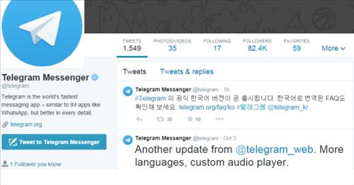
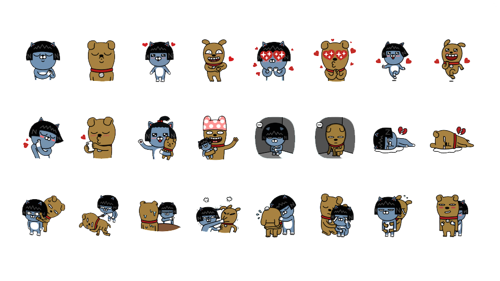
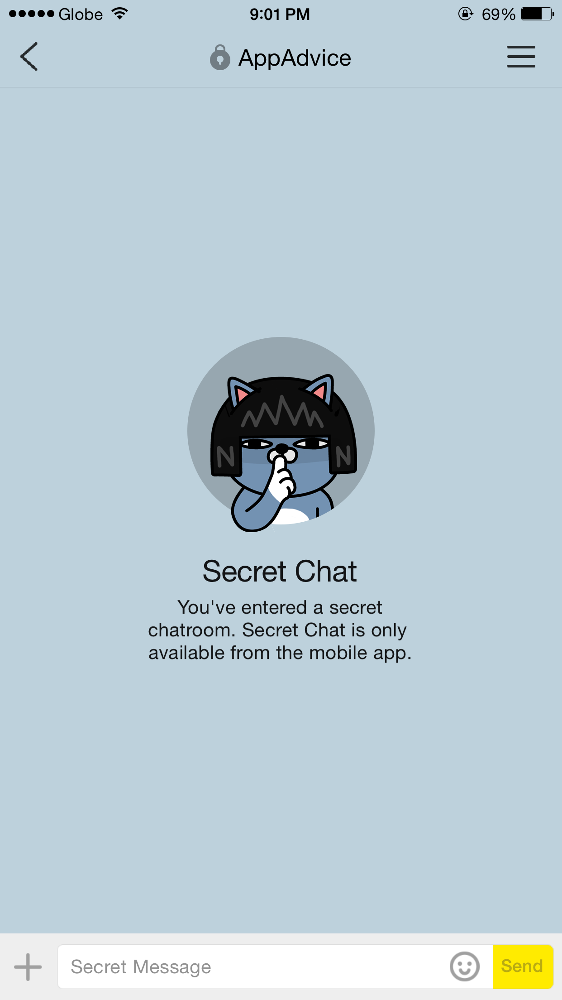
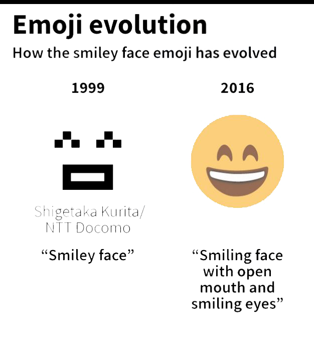
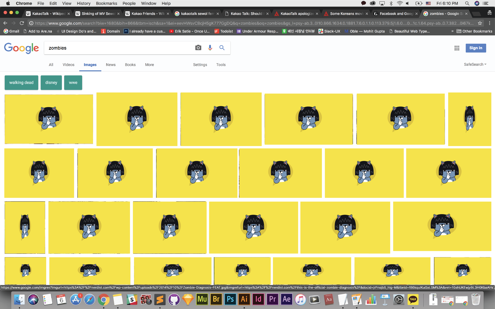

KakaoTalk is a Korean messaging app used by 93% of the country population. In the investigation of the sinking of the Sewol Ferry incident in 2014, the Korean government was found directly surveilling Kakaotalk messages with the justification that they were trying to stop false news that was taken from Kakaotalk messages.
When Korean users learned of this, many of them went to a German messaging platform called Telegram as it was built using complex encryptions so that the government could not access messages between users. To address the matter, Kakaotalk recognized privacy as a competitive advantage, and provided a new feature where users were able to engage in secret chats that could not be externally monitored.
In this secret chat, there is a landing screen that displays a Kakaotalk emoji that places a finger over its lips to represent secrecy. These emojis were actually created and released by KakaoTalk to make up for the loss of users and money from the Sewol Ferry crisis.
 The creation of emojis can be traced back to Japan in the late 1990s when the country's biggest phone operator NTT DoCoMo sought for a way to convey emotions in digital communication. In a culture where honorifics and messages of goodwill are important in relationships, the company noticed that miscommunication happens frequently in digital communication. Usage of emojis proved to faciliate communication of emotions.
Inspired by the original purpose of emojis and KakaoTalk’s usage of them, Privacy in Web extension is a parasite that enables users to to change images on the web to an emoji with just a click on the screen. Users could apply this extension when looking at confidential information in a public space or content inappropriate for children at home.
